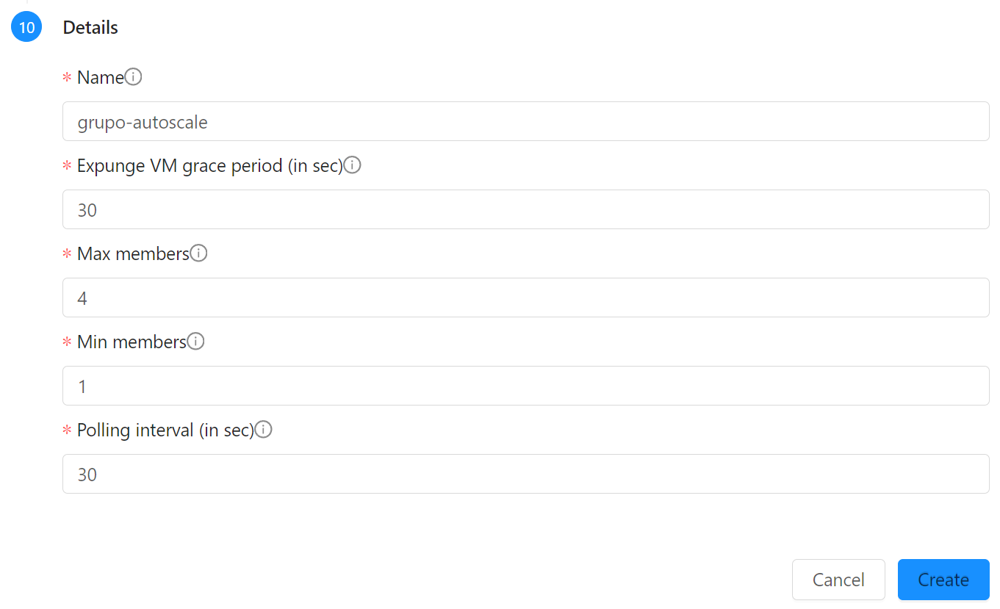

Load Balancing e Autoscaling
Neste passo demonstraremos:
- Load balancers para dividir tráfeto entre múltiplas instâncias
- Autoscaling para adequar o número de instâncias a uma demanda variável
Utilizaremos os recursos criados nos tutoriais anteriores. Execute-os se ainda não o fez.
Para começar, desligaremos a instância teste-template criada no passo anterior.
No menu de navegação à esquerda clique em Compute, Instances e clique na instância teste-template, e clique no botão Stop instance.
Criação do Load Balancer
- No menu à esquerda selecione Network, Guest networks e clique na rede minha-rede
- Clique sobre o IP que alocamos via Static NAT para teste_template, por exemplo
200.234.208.120 - Clique em Disable static NAT para liberar o IP.
- Clique na aba Load balancing e preencha conforme:
- Name: lb
- Public port: 80
- Private port: 80
- CIDR list: 0.0.0.0/0
- Algorithm: Round-robin
- Protocol: TCP
- Autoscale: Yes
- E clique no botão Add
- Clique no botão New sob AutoScale

Criação do AutoScale Group
- Aceite a zona, e escolha o template To Do app

- Em Compute offering escolha micro
- Escolha a rede minha-rede
- Em Load balancing mantenha a seleção da regra lb
- Em ScaleUp policies, ajuste o Duration e Quite time para 30 segundos, para encurtar o tempo de resposta no nosso teste de carga. Em Counter escolha VM CPU - average percentage, Operator: Greater than, Threshold: 70 e pressione Add condition
- Em ScaleDown policies, ajuste o Duration e Quite time para 30 segundos, para encurtar o tempo de resposta no nosso teste de carga. Em Counter escolhe VM CPU - average percentage, Operator: Less than, Threshold: 20 e pressione Add condition

- Finalmente, nos detalhes, coloque o nome de sua escolha, Expunge VM grace period de 30 segundos, para que as VMs sejam rapidamente apagadas após desativadas; mínimo e máximo de 1 a 4 membros; Polling interval de 30 segundos também. Conclua clicando em Create. 
- Aguarde a criação do Autoscale Group. Note que é necessário recriar as regras de firewall para o IP após ter sido remapeado para nova instância:

Teste da aplicação
Você pode verificar o grupo criado no menu Compute, AutoScale VM Groups. E, também, em Compute, Instances, pode verificar que já foi criada uma instância com nome do tipo autoScaleVm-grupo-autoscale-1-apknvq.
Pode também testar as páginas, usando o endereço IP público associado ao load balancer criado.
http://200.234.208.120/info.php
http://200.234.208.120/todo.php
http://200.234.208.120/cpu.php
Teste de carga
Instale o gerador de carga "hey" com sudo apt install hey ou brew install hey e digite, substituindo pelo IP alocado:
hey -z 3m http://200.234.208.120/cpu.php
Acompanhamento do AutoScale
Durante o andamento do teste acompanhe o comportamento do AutoScale em Compute, AutoScaleVM Groups e clicando em Refresh à medida em que o teste ocorre.

Também é interessante acompanhar em Compute, Instances como as VMs vão sendo paradas e apagadas depois que o teste termina.
E, também, ao clicar sobre a instância, é possível ver o comportamento em Metrics: